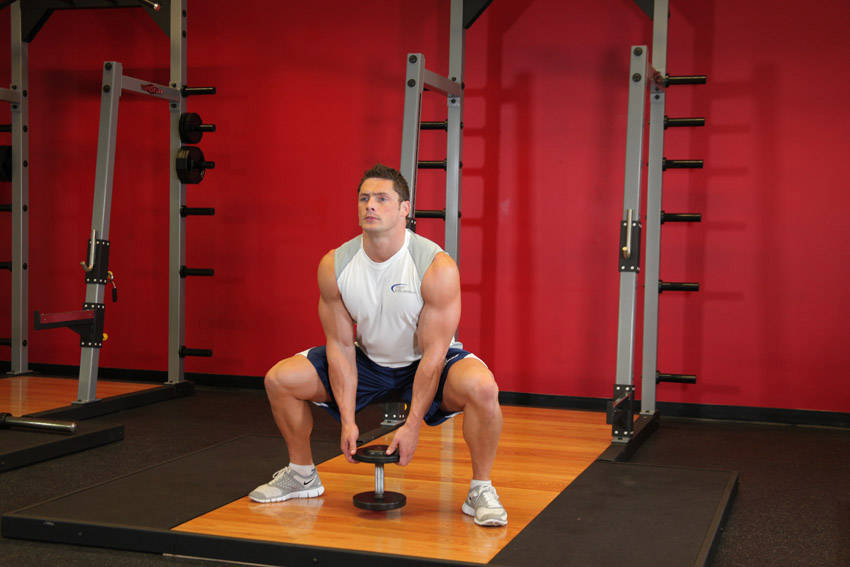

- Hold a dumbbell at the base with both hands and stand straight up. Move your legs so that they are wider than shoulder width apart from each other with your knees slightly bent.
- Your toes should be facing out. Note: Your arms should be stationary while performing the exercise. This is the starting position.
- Slowly bend the knees and lower your legs until your thighs are parallel to the floor. Make sure to inhale as this is the eccentric part of the exercise.
- Press mainly with the heel of the foot to bring the body back to the starting position while exhaling.
- Repeat for the recommended amount of repetitions.